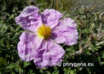
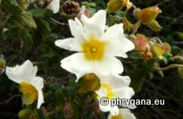

SPACH")
| PHRYGANA | Fauna | Flora | Galles | liste des espèces |
contact -
info - commentaires phrygana1 (at) gmail.com |
| Particularités crétoises | nouveautés | Mines | ressources naturelles |
| Cistaceae de Crète |
|
|
 |
 |
|
||
| Cistus creticus subsp. eriocephalus | Cistus salviifolius | Fumana arabica |
| 10 juin 2013 |
| © paul fontaine -- © Phrygana.eu 2007 -- 2013 |